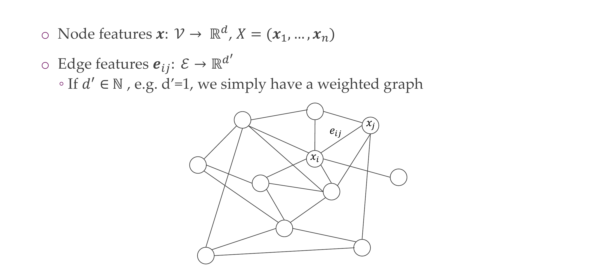
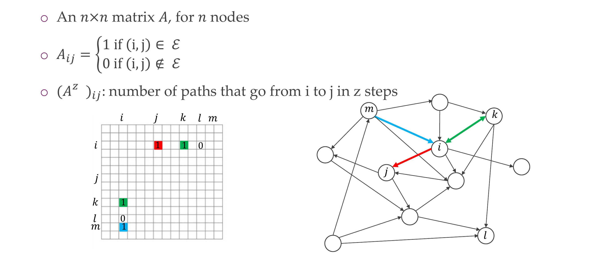
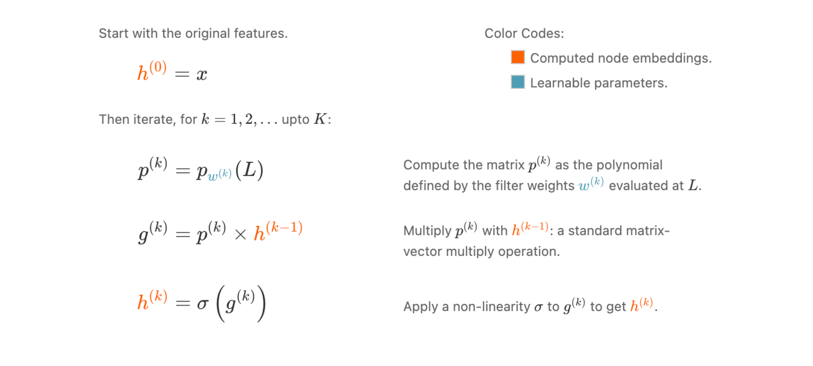
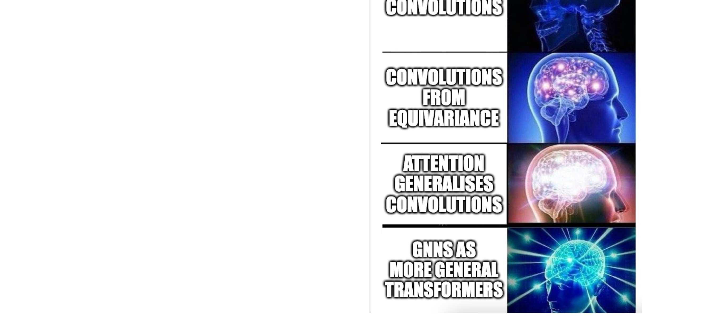

1 Title
2 Organisation
3 Lecture overview
4 Graphs! They’re everywhere
5 What are graphs?
6 What are graphs?
7 Graphs as geometry.
8 1) Classifying graphs

9 2) Classifying nodes
10 3) Graph generation
11 4) Link/Edge prediction
12 Three tasks visualized: here with nodes that carry features
13 Graphs can be static, varying, or even evolving with time
14 Regular structures vs graphs
15 Title
16 Directed graphs
17 Undirected graphs
18 Graph neighborhood
19 Attributes

The attention score is measured by these softmax
The dot product here it ends up being 2x3 again
20 Adjacency matrix

21 Adjacency matrix for undirected graphs
22 Weighted adjacency matrix
23 Graph representation for us
24 Quiz:
25 Graph Laplacian
26 Graph Laplacian: meaning
27 Applications of the Graph Laplacian
28 Applied Laplacian written out:
29 Title

30 The shift operator, a special circulant matrix
31 Now we want to know:
32 As it turns out: circulant matrices commute
33 What this means: Translation equivariance > circulant matrices/convolutions
34 Where we are
35 Maths: All circulant matrices have the same eigenvectors!
36 All circulant matrices have the same eigenvectors!
37 Circulant eigenvectors © Shift eigenvectors
38 But first: What are the eigenvectors of the shift operator
39 Computing a convolution in the frequency domain
40 Convolution Theorem
41 Convolution theorem
42 Frequency representation:
43 ; Quiz: Remember the Fourier transform for images: |
44 Convolution theorem: x * w = ®- (A(w) - (®* - x))
45 Implications
46 If translation equivariance leads to CNNs, what else is there?
47 A large field: Group Equivariant Deep Learning
48 Circulant matrices
49 “I was lucky…
How research gets done part 650 Title
51 From convolutions to spectral graph convolutions
52 Approach: Use Eigenvectors of Graph Laplacian to replace Fourier
53 Actually:
54 Further details
55 In analogy to convolutions in frequency domain:
We now define spectral graph convolutions56 Where we are, part 2
57 Why the graph Laplacian*?
58 Spectral graph convolution
59 Some drawbacks of this variant
60 Easy to increase the field of view with powers of the Laplacian
61 Putting it together: stacking graph convolutions

62 . Quiz: What nronerties does this nolvnomial variant have? |
63 Some drawbacks of this variant now
64 Title
65 A FF fF F Fg
66 Graph convolutions
67 What can we use from the spectral approach?
68 Graph Convolutional Networks (GCN)
69 Graph Convolutional Networks (GCN)
70 Putting it together:
71 Other kind of aggregation: Graph Attention Networks (GAT)
72 Self-attention for graph convolutions
73 Connection to transformers
74 Message Passing Neural Network (MPNN)
75 PyTorch Geometric baseclass
76 Overview
77 Finally, a note about coarsening graphs
78 Where we are, part 3
79 The last few lectures

80 Title